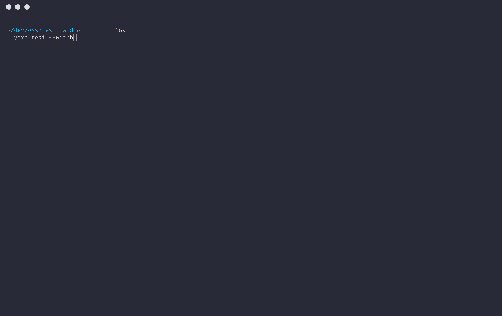

class: center, middle # Tooling ### Daniel Haering Michael Frevert Gerrit Haake <br/> Felix Schilk Simeon Weigel ####Rich Client Application Development<br/>Brunsmann --- # Softwarequalität - Tooling 0. Testing functional javascript 0. How to test nodejs apps using mocha chai and sinonjs 0. Snapshot Testing react with jest --- # Testing functional javascript --- # How to test nodejs apps using mocha chai and sinonjs --- # Snapshot Testing React with Jest Was ist Snapshot Testing? - Jest rendert eine UI(User Interface) Komponente und speichert den Zustand in einer Momentaufnahme(snapshot) - Jest vergleicht aktuellen Zustand mit gespeicherten snapshots - Snapshot-Tests sind ein sehr nützliches Tool, wenn man sicherstellen möchte, dass sich die UI nicht unerwartet ändert - Komponenten müssen vor ersten Test schon funktionieren --- # Snapshot Testing React with Jest ## Einrichten von Jest Installation ```javascript npm install react-test-renderer ``` Benötigter Import ```javascript import renderer from 'react-test-renderer'; ``` --- # Snapshot Testing React with Jest - In einer funktionierender Komponente müssen folgende Codezeilen enthalten sein, damit Snapshots erstellt werden und der Test ausgeführt wird ```javascript it('renders correctly', () => { const tree = renderer.create(<App />).toJSON();//Rendern der Komponente expect(tree).toMatchSnapshot(); //Vergleicht oder erstellt Snapshots }); ``` Tests starten mit ```javascript npm <App> ``` --- # Beispiel eines SnapshotsFiles ```javascript exports[`test renders a snapshot 1`] = ` <div className="App"> <div className="App-header"> <img alt="logo" className="App-logo" src="test-file-stub" /> <h2> Welcome to React </h2> </div> <p className="App-intro"> To get started, edit <code> src/App.js </code> and save to reload. </p> </div> `; }); ``` --- # Fehlgeschlagene Tests - Sollte sich der aktuelle Zustand der Komponente mit der in dem Snapshot gespeicherten Zustand unterscheiden, schlägt der Test fehl <img src="failedSnapshotTest.png" width="100%" height="auto" alt="failedSnapshotTest"> --- # Fehlgeschlagene Tests - In Grün wird der Zustand des letzten Snapshots angezeigt und in rot die des aktuellen Zustandes. - 2 Möglichkeiten für das weitere Vorgehen: 0. Updaten des Snaphots durch Eingabe -u (Snapshot wird auf aktuellen Stand aktualisiert) 0. Interaktiven Modus benutzen um Snapshots entweder zu aktualisieren oder zu überspringen (Nächste Seite) --- # Interaktiver Modus 